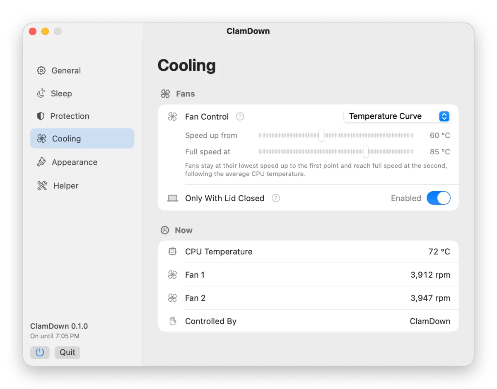

Software engineers before and after agents: a laptop held shut, then the same laptop held half-open. Post by @cormachayden_ on X.
Close the lid.
Your agents keep working.
Everything your agents need to keep working with the lid closed, in one free, open-source menu bar app.
- Stays awake with the lid shut: agents, terminals, browsers, SSH and downloads keep running
- Watches the CPU temperature and drives the fans while the lid is closed
- Locks the screen the moment the lid closes
- Switches itself off before a low battery or high heat becomes a problem
- A watchdog puts everything back if the app ever stops
- Mac
- Awake
- Screen
- Unlocked
- CPU
- 58 °C
- Fans
- 1,300 rpm
Stop carrying your laptop half-open
Close a MacBook and macOS puts it to sleep. Your agent stops in the middle of a task, and its session can drop.
So people walk through airports, offices and kitchens with the lid cracked open and a finger in the hinge. ClamDown lets you close it all the way: the agent keeps working, the screen locks, and the fans keep the Mac cool.
A mock ad for a clip that holds a laptop lid open so agents keep running. Post by @dedene on X.
A pre-order page for plastic clips that hold the lid open to keep agents running. Post by @kmcnam1 on X.
You don’t need someone else’s cloud to close the lid
The AI companies’ answer to a sleeping laptop is to move your agent onto their servers: cloud sessions that keep going after you close the lid, on their subscription plans.
Your Mac is already paid for, and your project, tools and keys are already on it. ClamDown keeps the agent running there, for free.
Question
A vendor’s cloud session
ClamDown on your Mac
What it costs
A paid plan, sometimes with usage limits
Free and open source
Where your code runs
On the vendor’s servers
On your Mac, where it already is
Your setup
Rebuilt in a remote sandbox: tools, secrets, network access
Everything you already have: local files, databases, VPN, keychain
Which agents
The vendor’s own agent
Any agent or tool you run in a terminal
A closed MacBook goes to sleep. Keep-awake apps can’t stop that.
Apps like Caffeinate hold a power assertion. It keeps the display and the system awake while the lid is open, and macOS ignores it the moment the lid closes, unless an external display and power are connected.
And keeping a closed Mac awake is only half the job. macOS keeps a closed MacBook’s fans near idle even when the chip is hot, and on battery nothing stops a long agent run from draining it to empty.
ClamDown turns on the system setting that does survive a closed lid, pmset disablesleep, and handles the rest: it drives the fans, watches the battery and the heat, and switches itself off in time. Your session keeps its processes, network connections and SSH tunnels.
- Coding agents that work through a task list on their own
- Browser sessions and automations your agents drive
- Terminal sessions that run for hours
- Builds, test suites and renders
- Large downloads, uploads and backups
- Remote access over SSH
A closed laptop needs rules.
ClamDown keeps them for you.
When
ClamDown
Default
The battery runs low
Switches off and lets the Mac sleep. Only on battery, so a charging Mac stays awake.
10%5–50% or off
The Mac runs hot
Switches off when the system thermal state reaches the cut-off.
SeriousFair, Serious, Critical or never
The lid closes
Locks the screen, so opening the lid asks for your password.
On
You run on battery
Turns on Low Power Mode, and restores your previous setting when it switches off.
On
The timer ends
Switches off. Start a timed session from the menu with Turn On For.
Never30 minutes to 8 hours
The adapter is unplugged
Switches off.
Off
The app quits or stops responding
The helper notices the missing heartbeat within about 90 seconds and puts sleep, Low Power Mode and the fans back by itself.
Always
It switches itself off
Posts a notification that names the reason.
On
Fans that answer the heat, even with the lid shut
macOS keeps a closed MacBook’s fans near their lowest speed, even when the chip is hot. While the lid is closed, ClamDown drives them from the CPU temperature instead.
Speed rises at once and falls by at most 150 rpm every 3 seconds, so short dips in load don’t make the fans hunt. Opening the lid hands them back to macOS. Fan control needs Apple Silicon; Intel Macs show the readings.
Show as a table
| CPU temperature | Fan speed |
|---|---|
| Up to 60 °C | Lowest |
| 65 °C | 20% of the fan’s range |
| 70 °C | 40% of the fan’s range |
| 75 °C | 60% of the fan’s range |
| 80 °C | 80% of the fan’s range |
| 85 °C and above | Full |
Every rule is a setting you can see

Set up in a minute
-
Install
Download ClamDown.dmg, open it and drag ClamDown into Applications.
-
Approve the helper
Click the switch. macOS asks you to allow ClamDown in System Settings, General, Login Items & Extensions. Turn it on, then click the switch again.
-
Close the lid
Your work keeps running. Open the lid and unlock to pick up where it is.
Open source, notarized and deliberately narrow
Changing sleep settings needs root, so ClamDown installs a small helper that macOS asks you to approve. The helper can do only this:
- Turn
disablesleepon or off - Turn Low Power Mode on or off for the battery profile
- Read those two values, the temperature sensors and the fans
- Set fan speeds within each fan’s own range, while the mode is on
It accepts connections only from the ClamDown app signed by the same developer, and it resets any leftover state every time it starts. The app is signed with Developer ID, notarized by Apple and licensed under Apache 2.0.
Questions
Can I put my MacBook in a bag with ClamDown on?
A closed bag traps heat, and no app changes that. The thermal cut-off switches ClamDown off and lets the Mac sleep before it gets dangerous, but keep heavy work for a desk or a stand where air can reach the Mac.
Does it work on Intel Macs?
Yes. ClamDown is a universal app. Keeping the Mac awake, the cut-offs and the screen lock work on both. Fan control needs Apple Silicon; on an Intel Mac the Cooling page shows the readings only.
What happens if ClamDown crashes?
The app sends the helper a heartbeat about every 30 seconds. If it stops for about 90 seconds, the helper turns sleep and Low Power Mode back to normal and hands the fans to macOS. A restart does the same.
Is my Mac unlocked while the lid is closed?
No. By default ClamDown locks the screen when the lid closes. If you turn that setting off, lock the Mac yourself with Control-Command-Q before you leave it.
How do I uninstall it?
Switch ClamDown off, quit it and delete the app. If the Mac then refuses to sleep, run sudo pmset disablesleep 0 in Terminal. A restart gives the fans back to macOS.
What does it cost?
Nothing. ClamDown is free and open source under the Apache 2.0 license.